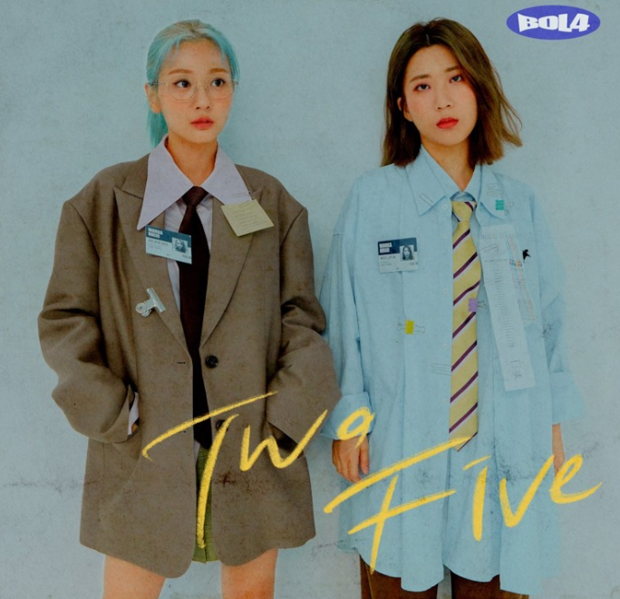

My favorite things
movie
BOL4
sleeping
BOL4-볼빨간 사춘기

멤버
안지영,우지영
소속사
shofar
데뷔일
2016년4월22일
팬덤
러볼리
수상경력
2016년
제8회 《멜론 뮤직 어워드》 - 인디 부문 뮤직스타일상
2017년
제6회 《가온 차트 K-POP 어워드》 - 올해의 발견상 인디부문
제31회 《Golden Disc Awards》 - 음원 신인상
제14회 《한국대중음악상》 - 올해의 노래
《아시아 아티스트 어워즈》 - 베스트 엔터테이너 상
《대한민국 문화연예대상》 - 케이팝 가수상
《엠넷 아시안 뮤직 어워드》 - 베스트 보컬 퍼포먼스 그룹상
제9회 《멜론 뮤직 어워드》 - TOP 10상
2018년
제2회 《소리바다 베스트 케이뮤직 어워드》 - 본상
제32회 《Golden Disc Awards》 - 디지털 음원부문 본상
제27회 《서울가요대상》 - 본상
제10회 《멜론 뮤직 어워드》 - TOP 10상
2019년
제8회 《가온 차트 K-POP 어워드》 - 올해의 가수상 음원 (5월)
제33회 《Golden Disc Awards》 - 디지털 음원부문 본상
제11회 《멜론 뮤직 어워드》 - TOP 10상
Instargram
https://www.instagram.com/official_bol4/
Youtube
BOL4 OFFICIAL(https://www.youtube.com/BOL4OFFICIAL)
official homepage
http://shofar-music.com/blush